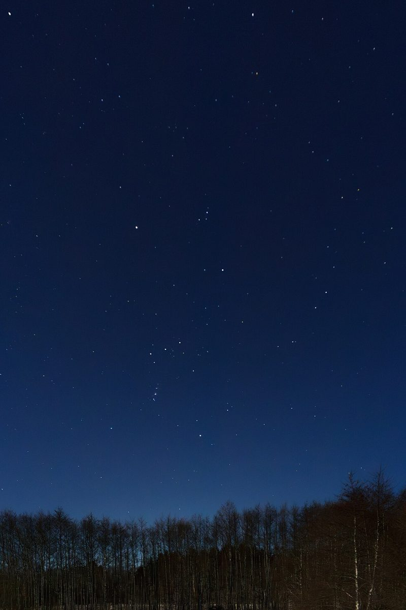
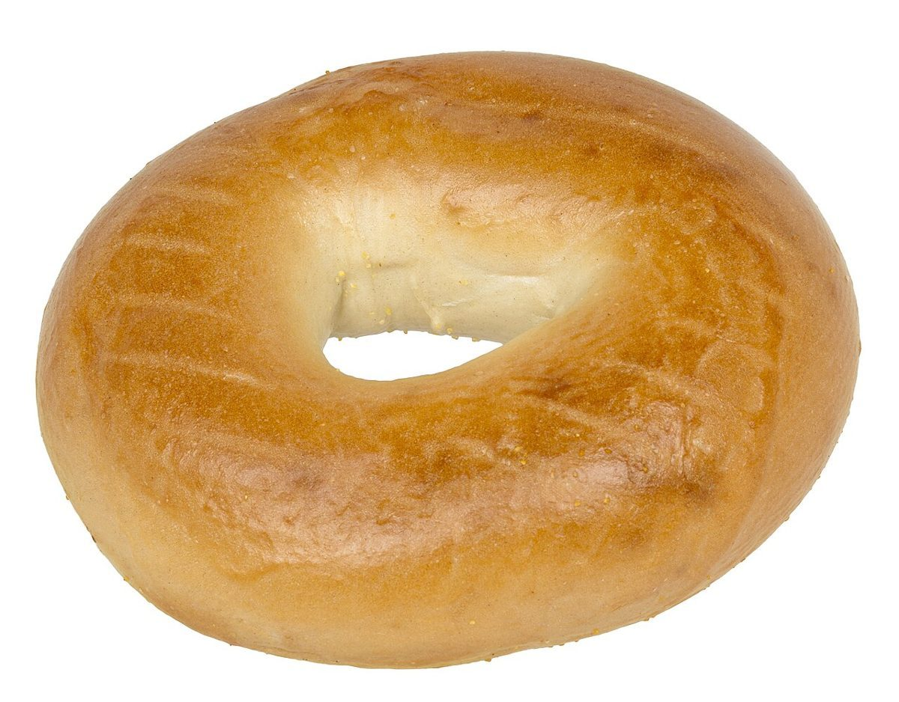
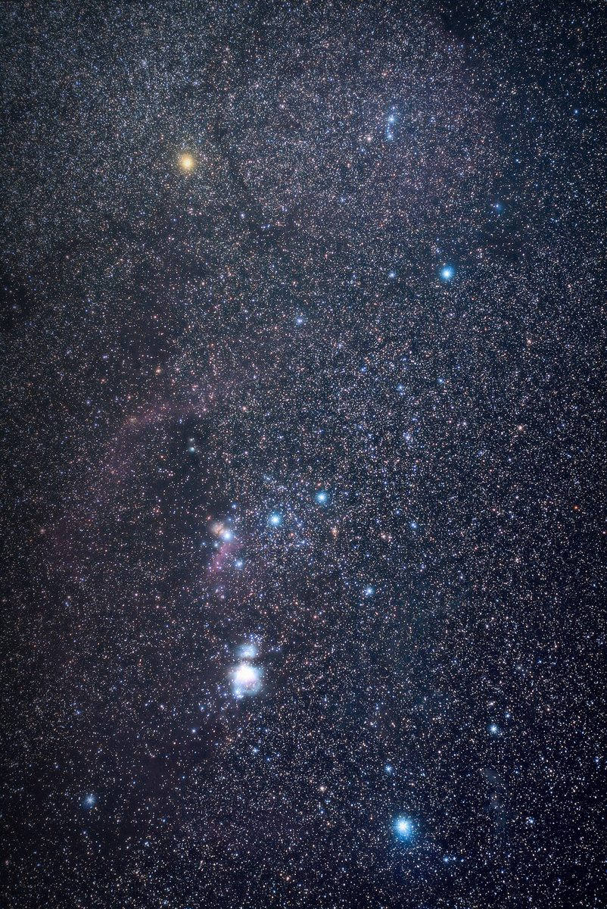

ベーグル / 宮城県岩沼市
ORIONBAGEL
宮城県岩沼市たけくま2丁目にあるベーグルのお店「ORION BAGEL」のご案内ページです。営業時間やメニューなど、詳しいことは準備中。まずはInstagramをのぞいてみてください。
制作側の連想
屋号の「ORION」から、冬の星座を連想しました。
店名の由来は分かりません。「ORION」と聞いて、制作側はオリオン座を連想しました。この連想は制作側のもので、お店の理念・由来とは無関係です。そこでこのページは、オリオン座の七つの星になぞらえて作っています。まんなかに並ぶ三つ星のベルトは「確認できた情報」、四隅の星は「準備中の情報」です。
七つ星の座標
灯った三つと、まだ暗い四つ。
- 1アルニタク電話確認済み
- 2アルニラムInstagram確認済み
- 3ミンタカ所在地確認済み
- 4ベテルギウス営業時間準備中
- 5ベラトリックス定休日準備中
- 6サイフメニュー・価格準備中
- 7リゲルご予約・駐車場準備中
店名と業種から連想した制作側の見立てです。星座の知識をお店の特徴として述べるものではありません。
輪のかたち
ベーグルのまんなかの穴、月の輪、星の輪。
写真はお店のものではありません。「輪」というかたちで選んだ、国外・撮影地不明のフリー素材です。



ご案内
お店のこと(確認できたものだけ)
| 所在地 | 〒989-2459 宮城県岩沼市たけくま2丁目5-11 |
|---|---|
| 電話 | 050-8884-3544 |
| SNS | Instagram @orion_bagel |
| 営業時間 | 準備中 |
| 定休日 | 準備中 |
| ご予約 | 準備中 |
| 駐車場 | 準備中 |